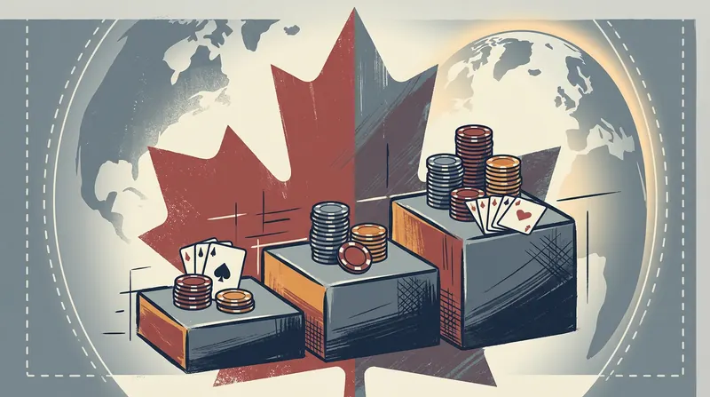

By Alex Drummond, Editor-in-Chief · April 30, 2026 · Fact-checked by Maya Chen

GGPoker has confirmed the schedule for the GG Ontario Festival, the operator's third dedicated provincial tournament series, opening Saturday with C$8 million in guaranteed prize money over a 38-day run. The local edition aligns with the global GG World Festival, which carries US$300 million in guarantees on the operator's dot-com client over the same dates of May 3 to June 9.
The C$8 million Ontario commitment is the largest spring online festival ever staged in the regulated provincial market and the second-largest GGPoker Ontario series of any kind, behind only the C$7 million WSOP Online Bracelet Series that ran in late summer 2025. It is also a 33 per cent increase on the C$6 million guaranteed by the same festival in 2025, which was itself double the C$3 million committed in 2023, when the series first ran.
The Three-Tier Structure
The festival is divided into three buy-in tiers running across the same five-week schedule. The Low tier covers events priced from C$3 to C$25, anchored by the popular C$5 Ontario Mini MILLION$ and feeding most of the daily phased schedule. The Medium tier, with buy-ins from C$25 to C$150, contains the largest concentration of local marquee events, including the recurring C$50 Ontario MILLION$ and a series of mystery bounty editions. The High tier, for buy-ins of C$150 and above, is where the headliners sit.
The flagship event, the C$1,500 GG Ontario Championship, is expected to carry a C$200,000 guarantee on its main day, in line with the 2025 schedule. The C$525 Ontario MILLION$ High Roller and the C$210 Ontario MILLION$ Closer are likely to match that figure on the basis of last year's structure. A second tier of headliners, with C$100,000 guarantees, sits underneath, including the C$50 Ontario MILLION$ Festival Edition and the C$1,050 GGMasters Festival High Roller. Each of the three tiers carries its own dedicated leaderboard, with the C$100,000 of leaderboard money distributed across them.
GGPoker Ontario has not yet published the full event-by-event schedule on the operator's lobby, but the structure released to operators reproduces the format used in 2024 and 2025: roughly 215 events per tier, an average guarantee around C$10,000 per event, and a daily Sunday Bounty King at C$105 with a C$50,000 guarantee carried through the festival window.
The C$300 Million Wall
The Ontario festival's C$8 million guarantee is dwarfed by the global series running on the same calendar. GGPoker's GG World Festival on the dot-com client carries US$300 million in prize pools across more than 1,600 events, including three flagship US$10 million tournaments: the C$525 World Bounty Festival on May 18, the US$10,000 GGMillion$ Main Event on May 25 and the US$1,500 GG World Championship on June 1. None of those events is available to players physically located in Ontario.
The split is a function of the province's framework. The Alcohol and Gaming Commission of Ontario and iGaming Ontario, the province's stand-alone Crown agency, require every operator to run a dedicated client in which only Ontario players can compete. GGPoker, like every other peer-to-peer poker operator licensed in the province since 2022, runs two parallel platforms, one for Ontario and one for the rest of the world, with no overlap of liquidity. The November 2025 Ontario Court of Appeal ruling cleared a constitutional path toward shared liquidity but did not implement it; AGCO and iGaming Ontario continue to study the judgment without committing to a timetable, and the Canadian Lottery Coalition has signalled it will seek leave to appeal to the Supreme Court of Canada.
The structural mismatch is what makes a C$8 million local guarantee newsworthy in its own right. With the Ontario player pool capped by population and the wider Canadian market unavailable to it, GGPoker's spring numbers in the province depend almost entirely on the operator's willingness to overlay guarantees rather than wait for organic demand to fill them.
Why GGPoker Ontario Keeps Adding Money
The growth of the GG Ontario Festival over four years tracks the broader shape of Ontario's regulated poker market. Online poker in the province has averaged C$5.9 million in monthly revenue over the trailing 13 months on roughly C$141 million in monthly cash wagers, the regulator's published data show. January 2026 brought C$5.9 million on C$156 million in handle, the strongest month for poker in two years and the second consecutive month of year-on-year handle growth, before February pulled back to C$5.4 million on C$135 million.
The festival is GGPoker's principal mechanism for accelerating that organic growth at predictable points in the calendar. The 2024 edition lifted local cash-game traffic by an estimated 18 per cent during its run, in line with the operator's own disclosures, and the 2025 edition lifted it by a comparable amount. The 2026 schedule should produce a similar boost, with overlay risk concentrated in the C$200,000-guaranteed marquee events and the C$100,000 Festival editions where the operator can be confident of meeting the line.
The expansion this year also lands in a market where GGPoker is the largest of six licensed peer-to-peer poker operators. GGPoker Ontario sits ahead of PokerStars Ontario, 888poker Ontario and the shared MGM-Entain network, which runs as BetMGM Poker, PartyPoker Ontario and Bwin Ontario. None of GGPoker's competitors has matched the festival commitment for the same dates. PokerStars Ontario has no announced spring series in advance of the FanDuel-branded migration that begins on May 5 with the retirement of progressive jackpots; 888poker Ontario has not announced an XL Spring equivalent in the province; and the MGM network's spring tournament push runs through the existing branded daily lobby rather than a dedicated festival.
Calendar Pressure From Las Vegas
The festival also runs into a busy live calendar. The WSOP International Circuit at Playground Poker Club in Kahnawake, Quebec, opens on May 10 and runs to May 25, with a C$2,000 Main Event that has historically drawn a heavy contingent of Ontario players. Casino Niagara's Spring Main Event runs May 19-22 with a C$1,000 buy-in. The 2026 World Series of Poker in Las Vegas opens on May 26 with a 100-event bracelet schedule, and several of GGPoker Ontario's regular high-roller customers are expected to spend at least part of the festival in Nevada.
The overlap is part of why the festival has expanded the Low and Medium tiers more aggressively than the High tier this year. Most of the tiered leaderboard money sits at the C$3-to-C$150 buy-in range, where the player pool is fullest and the impact of out-of-province travel is smallest. The marquee C$1,500 GG Ontario Championship, like its 2025 predecessor, runs in the second week of June after the WSOP Circuit Playground series has wrapped, allowing late-stage Day 2 fields to draw from players returning from Quebec.
The Forward Calendar
For Ontario players, the GG Ontario Festival represents the largest single block of online tournament guarantees on the local 2026 calendar. With the WSOP Online Bracelet Series in late summer expected to follow last year's C$7 million baseline, and PokerStars Ontario's FanDuel-era spring schedule still unconfirmed, the May-June window is now firmly anchored by GGPoker.
The longer-term question for the festival, as for every Ontario poker product, is whether shared liquidity arrives during its 2027 cycle. If AGCO and iGaming Ontario act on the November 2025 Court of Appeal ruling before next spring, the festival would be the largest single beneficiary in the province: combined Ontario-Alberta or international player pools would let GGPoker run the Ontario championship at materially higher guarantees without overlay risk. For now, the operator is doing it the harder way, with a C$8 million number that has nowhere to draw from but the province itself, and that, given the calendar, is no small commitment.